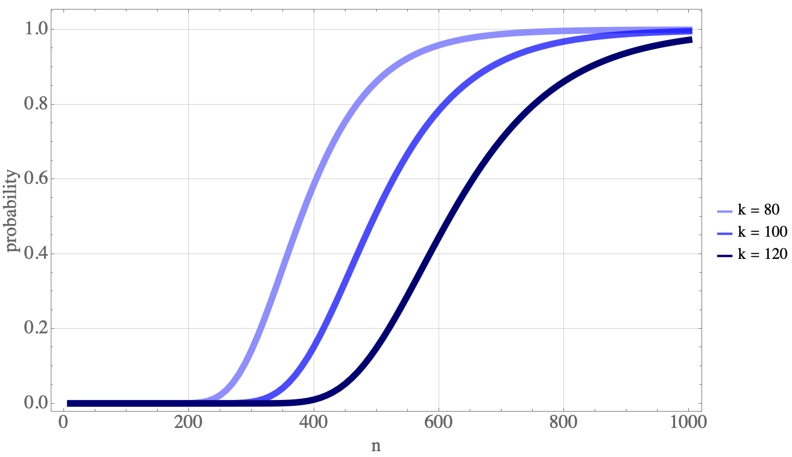
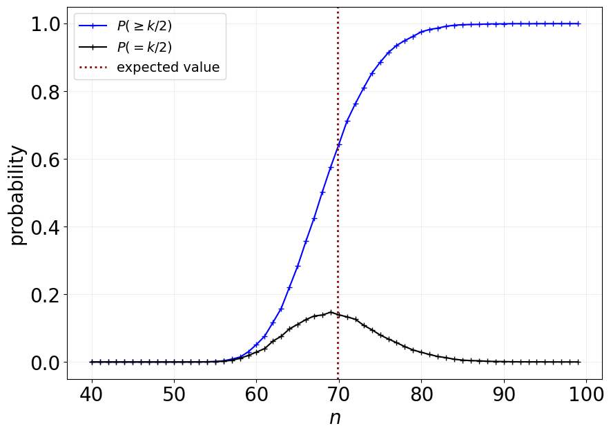
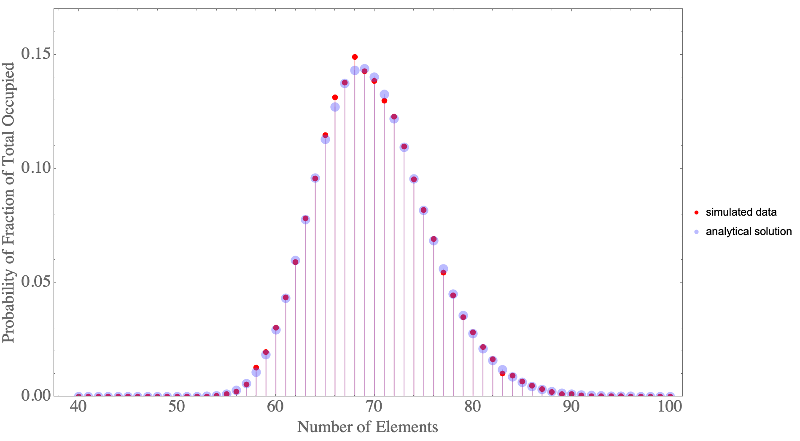

Modified Coupon Collector's Problem
Introduction
In probability theory, the coupon collector’s problem refers to the mathematical analysis of collecting every distinct kind of element when randomly choosing elements with replacement. Two initial questions can be asked for this problem: (1) If there are $k$ different kinds of coupons, what is the probability that all $k$ kinds of coupons have been collected after $n$ coupons are collected with replacement? (2) Given $k$ kinds of coupons, how many coupons do you expect you need to draw with replacement before having drawn each coupon at least once?
Connection to the Ship of Theseus
The Ship of Theseus is a ‘thought experiment’ rather than a problem. It’s meant to discuss the concepts of identity. As a person from deep within the internet (Jeremy Glenesk) puts it:
The experiment is meant to provoke thought, and make you question ideas. It is not meant to have a clear cut solution, because it’s not actually a problem, but an examination of the way in which we view identity. And through this, you have to question what criteria we use to classify identities, as this experiment is really meant to be a simplistic analogue to human identities, which is obviously significantly more complex. Am I the same person I was 10 years ago, even if basically every cell in my body has been discarded and replaced? Am I the same person, even if I hold different beliefs and experiences than the person from a decade ago? What makes a person who they are? How do we deal with the transference of identity? This is the point of the Ship of Theseus.
Having said that, we could think of replacing the various components of a system individually and iteratively, by a random process, and ask the question: how long until the system is completely replaced? This could be a connection to this philosophical thought experiment.
Classic Problem
There are many interesting examples which could be used but let’s stick with the classic scenario of coupon collection. When explaining the problem to a musician friend of mine, I described it in terms of keys on a piano: what is the expected number of key presses needed ("with replacement") in order to press all 88 keys on the piano? There are countless other applications that could be considered.
To keep consistent terminology, let’s refer to the kinds of coupons as "kinds" $(k)$ and the number of collected coupons as "coupons" $(n)$. That is, what is the expected number $n$ needed to collected all $k$ kinds?
Expectation Value
Let $T$ be a random variable of the number of coupons needed to collected all distinct kinds. Let $t_i$ be the number of coupons needed to collect the $i^{th}$ kind after $(i-1)$ coupons have already been collected. Therefore, $T=t_1+\cdots+t_k$. The probability of collecting a new $i^{th}$ kind is $p_i=\frac{k-(i-1)}{k}=\frac{k-i+1}{k}$.
Keep in mind that for each new kind, the number of coupons we need to collect before reaching a new one follows a geometric distribution $––$ a distribution over the number of trials needed before seeing the first success.
It’s helpful to know that the expectation value of the geometric distribution is $\frac{1}{p}$. So in this case, it’d be $\frac{1}{p_i}=\frac{k}{k-i+1}$. By the Linearity of Expectations:
$$ \begin{align} E(T) &= E(t_1+\cdots+t_k) \\ &= E(t_1) + \cdots + E(t_k) \\ &= \frac{1}{p_1} + \cdots + \frac{1}{p_k} \\ &= \frac{k}{k} + \frac{k}{k - 1} + \cdots + \frac{k}{1} \\ &= k \cdot \left(\frac{1}{1} + \frac{1}{2} + \cdots + \frac{1}{k}\right) \\ &= k \cdot H_k \\ \end{align} $$
where $H_k$ is the $k^{th}$ Harmonic Number.
Probabilities
As with most probabilities, we can begin with thinking about a simple ratio $$P(A | n, k) = \frac{f(n, k)}{g(n, k)}$$ where again, $n$ is the number of coupons collected, $k$ is the number of kinds of coupons, and $A$ is the event that each coupon has been collected at least once.
- $g(n, k)$: This is the easier expression and represents the number of ways of distributing $n$ coupons among $k$ kinds, allowing for the possibility of having one or more kinds without an associated coupon.
- $f(n, k)$: When $(n=k)$, this is simply the number of ways of distributing $n$ distinct coupons among $k$ distinct kinds (i.e., every kind has a single coupon associated with it), which becomes $f(n,k)=n!=k!$. This becomes more complicated when $(n > k)$ and we consider the restriction that no coupons are left uncollected. To tackle this, we’ll consider how many ways there are to rearrange $n$ into $k$ without restriction (basically $g(n, k)$) and then subtract the number of arrangements there are with one kind uncollected then subtract the number of arrangements there are with two kinds uncollected, and so on. This is written below as a recurrence relation.
$$g(n, k) = k^n$$ $$f(n, k) = k^n - {k \choose 1} \cdot f(n, 1) - {k \choose 2} \cdot f(n, 2) - \cdots - {k \choose k - 1} \cdot f(n, k - 1) = k^n - \sum_{i = 1}^{k - 1}{k \choose i} f(n, i)$$
The more elegant way to solve this problem is to consider the well known Stirling Numbers of the Second Kind used in the field of combinatorics. The Stirling number of the second kind is the number of ways to partition a set of $n$ labeled objects into $k$ unlabeled non-empty subsets and is denoted by ${n \brace k}$. This helps us immensely since this is a key idea in the $f(n, k)$ that we found difficulty with above. The main consideration for our problem is that the kinds of coupons are actually labeled and we care what kind is collected by which coupon. In order to correct for this we add an extra $k!$ into our calculation. Therefore: $$f(n, k) = k! {n \brace k}$$ We have all the pieces we need to get our answer. $$P(A | n, k) = \frac{f(n, k)}{g(n, k)}=\frac{k!\cdot{n \brace k}}{k^n}$$ $$P(A | n, k) = \frac{1}{k^n}\sum_{i=0}^{k} (-1)^i {k \choose i}(k - i)^n$$
The Mathematica code used to generate the following plot is pretty straight forward:
f[n_, k_] := Sum[(-1)^i Binomial[k, i] (k - i)^n, {i, 0, k}]
g[n_, k_] := k^n
Table[Table[{n, f[n, k]/g[n, k]}, {n, 10, 1000, 10}], {k, {80, 100, 120}}]

Figure 1. Probability of collecting all $k$ kinds when $n$ coupons (shows three examples).
Modified Problem
Rather than collecting all the kinds of the coupons, we may be interested in just a portion of them. For example, how might this probability profile and expectation value change if we were interested in collecting half of the various kinds of coupons?
Expectation Value
Previously, we saw: $$\sum_{n=0}^{k-1}\frac{k}{k-n}=k\cdot H_k$$ where $H_k$ is the $k^{th}$ harmonic number. However, if we only want to measure the "time" or trials needed collected half the coupons, the sum becomes: $$\sum_{n=0}^{(k/2)-1}\frac{k}{k-n}=k\cdot H_k - k\cdot H_{k/2} = k\cdot (H_k - H_{k/2})$$
If we take one of the example from above $$E_{1/2}[T_{k=100}]=k\cdot (H_k - H_{k/2})=69.81721793101974$$
harmonic_number = lambda k: sum([1/i for i in range(1,k)])
100 * (harmonic_number(100) - harmonic_number(50))
That is, if there are 100 distinct kinds, the expected number of coupons needed to collect half of them is about 70. We can make this a key result:
Probability
When I first approached this problem, I thought there could be a couple ways to answer it: (1) the probability of at least $k/2$ has been collected and (2) the probability that exactly half of the coupons are collected. You might imagine that there isn’t a high probability that we can reached $k/2$ exactly but there does exist an $n$ that makes collecting $k/2$ kinds most likely.
Simulation
To begin, we might want to create a simulation. In python, this becomes a one-liner. First, we can write a Monte Carlo simulation prob_mc for collecting at least half of the kinds:
prob_mc = lambda n: np.sum((np.array([len(set(np.random.choice(k,n)))/k for _ in range(m)]) >= p))/m
Another simulation is written prob_mc_range for collecting exactly half within some small margin, $\delta$. That is, $(f - \delta \le f’ \le f + \delta)$ for some desired fraction $f$ of the total number of kinds of coupons, $k$. In the code below, $\delta = 0.0001$.
prob_mc_range = lambda n: np.sum((np.abs(np.array([len(set(np.random.choice(k,n)))/k
for _ in range(m)]) - p) <= 0.0001))/m

Figure 2. Probability of collecting half of $k$ kinds when $n$ coupons are collected. This shows the probability of at least half and exactly half within some margin.
These two functions were also written in the Wolfram Language:
mcProbabilityLimit[k_, n_, p_, m_] :=
Count[Table[
Length[DeleteDuplicates[RandomInteger[{0, k - 1}, n]]]/k, {i,
m}], u_ /; u >= p]/m // N
mcProbabilityRange[k_, n_, p_, m_, \[Delta]_] :=
Count[Abs[
Table[Length[DeleteDuplicates[RandomInteger[{0, k - 1}, n]]]/
k, {i, m}] - p], u_ /; u <= \[Delta]]/m // N
Analytical Solution
Ideally, an analytical solution, if one exists, would allow us to calculate these probabilities easily. The key is to start with the classic problem from above. There are two main ideas to explore to get to the answer:
- Shrink the problem and pretend there are only $k/2$ kinds of coupons that exist
- Find the number of combinations of $k/2$ occupied and $k/2$ unoccupied coupon configurations
These two are depicted in the drawing below. (1) tells us that we can simply take the solution from the classic problem but with fewer coupons. In this case, specifically:
$$(k/2)!\cdot {n \brace (k/2)}$$
where $k = 2 j$ and $j \in \mathbb{Z}$ ($k$ is even and if it isn’t, use $\left\lfloor \frac{k}{2} \right\rfloor)$.
(2) is simply the number of ways to arrange $k/2$ collected kinds among all the $k$ possible kinds and therefore becomes:
$${k \choose (k/2)}=\frac{k!}{(k/2)!(k-k/2)!}=\frac{1}{2}\frac{k!}{(k/2)!}=\frac{1}{2}(k)_{k/2}$$
where $(k)_{k/2}$ is the falling factorial.
$$(k)_{k/2} = \prod_{i=1}^{k/2}(k - i + 1)$$
Therefore, the probability of collecting half of $k$ kinds of coupons given $n$ collected coupons is:
$$P = \frac{1}{k^n} \cdot \frac{1}{2}\prod_{i=1}^{k/2}(k - i + 1) \cdot (k/2)! \cdot {n \brace (k/2)}$$
 Figure 3. Drawing that shows the general idea of analytical solution for $k/2$.
Figure 3. Drawing that shows the general idea of analytical solution for $k/2$.
 Figure 4. Probability of collecting half of $k$ coupons given $n$ elements/coupons collected (where $k=100$).
 Figure 5. Probability of collecting at least half of $k$ kinds of coupons given $n$ elements/coupons collected (where $k=100$).
Figure 5. Probability of collecting at least half of $k$ kinds of coupons given $n$ elements/coupons collected (where $k=100$).